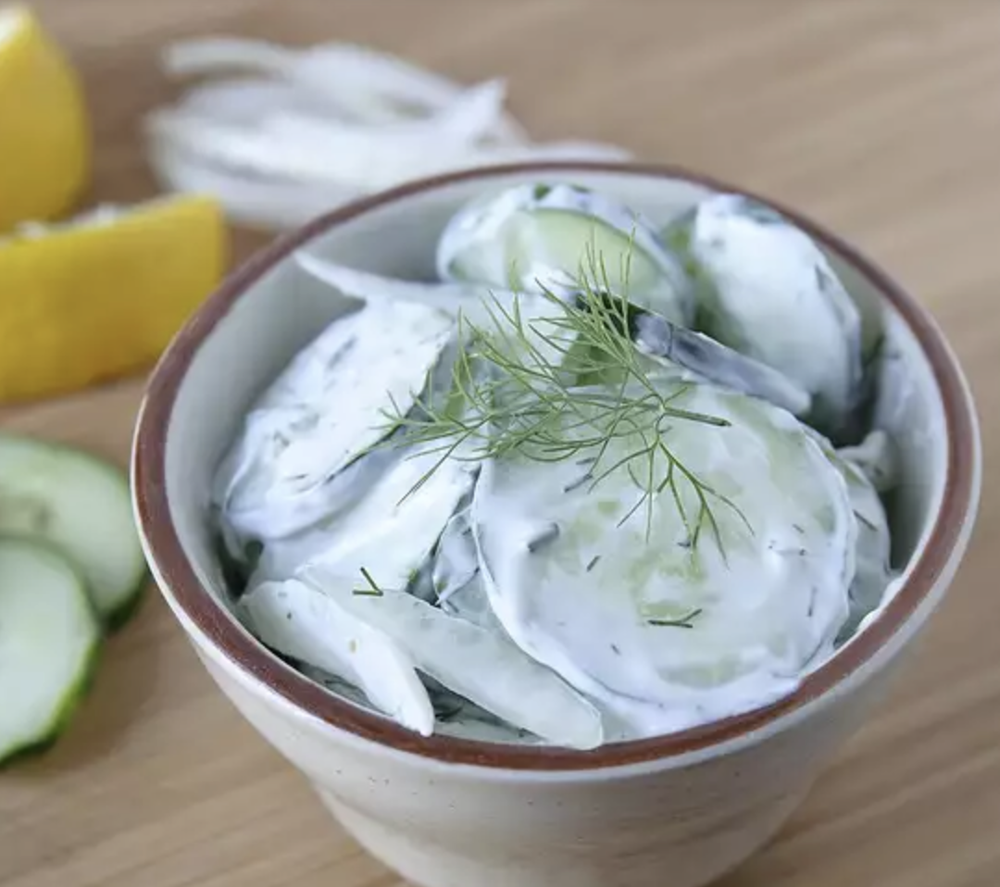

Cucumber Salad

The recipe for this easy salad came from my grandma, who made it in the summers with fresh dill and cucumbers from her garden.
Ingredients
- ½ cup reduced-fat sour cream (such as Daisy®)
- 2 tablespoons fresh lemon juice
- 2 tablespoons chopped fresh dill
- 3 cucumbers, halved lengthwise and thinly sliced crosswise
- ½ cup thinly sliced red onion
- coarse salt and ground black pepper to taste
Steps
- Mix sour cream, lemon juice, and dill together in a bowl. Add cucumbers and onion; stir to combine. Season with salt and black pepper.